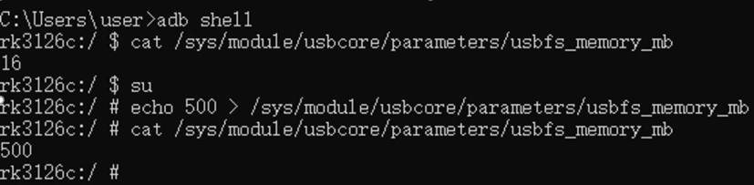
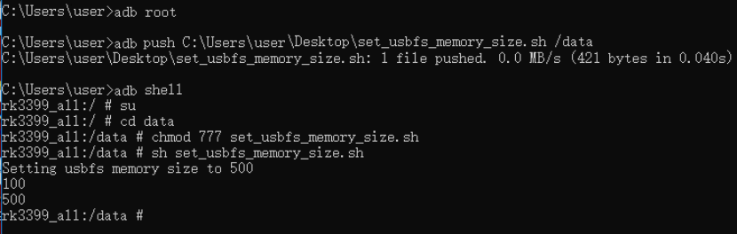
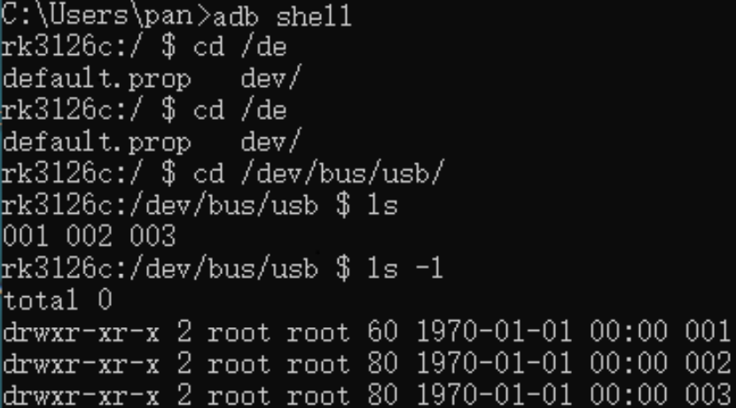
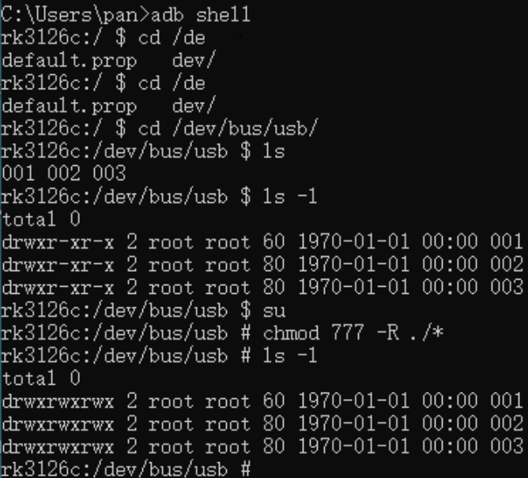
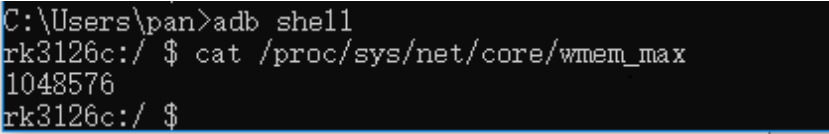
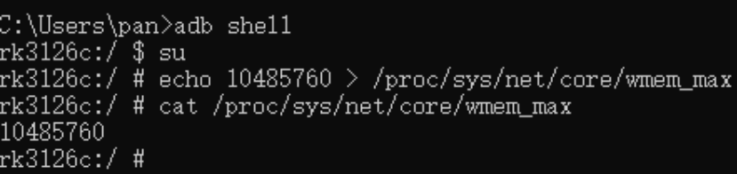
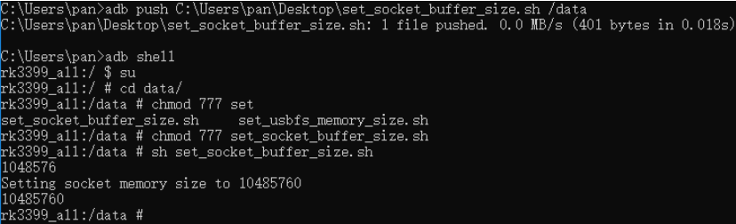

本章节介绍了Android SDK中的常见问题，阐述其原因以及解决方法。
Question1 U口相机开始取流无图像
原因
由于USB缓存太小导致的U口相机丢帧，或者大分辨率相机取流失败。
解决方法
通过ADB 修改USB缓存，操作如下：
-
查看USB 缓存命令。
adb shell
cat /sys/module/usbcore/parameters/usbfs_memory_mb
设置USB缓存
adb shell
su
echo 500 > /sys/module/usbcore/parameters/usbfs_memory_mb

-
adb root
adb push pc上文件路径 /data/
adb shell
su
cd data/
chmod 777 set_usbfs_memory_size.sh
sh set_usbfs_memory_size.sh

Question2 网口相机开始取流后图像异常或者Android 设备卡死
原因
Android 设备不支持巨帧，相机开启巨帧可能导致一些低性能的Android设备卡死。
解决方法
将相机SCPS 设置为1500，示例代码如下：
int nPacketSize = MvCameraControl.MV_CC_GetOptimalPacketSize(handle)͖
if(nPacketSize > 0){
nRet = MvCameraControl.MV_CC_SetIntValue(handle,"GevSCPSPacketSize",nPacketSize);
if(nRet!=MV_OK){
showLog("Warning:Set Packet Size fail nRet"+Integer.toHexString(nRet));
return;
}
}else{
showLog("Warning:Get Packet Size fail nRet"+Integer.toHexString(nPacketSize));
}
Question3 Android设备无法枚举到U口相机
原因
由于USB没有权限导致的Android 设备无法枚举到相机。
解决方法
通过ADB修改USB权限。
查看USB 设备权限命令：
adb shell
cd /dev/bus/usb
ls –l

修改USB权限
adb shell
cd /dev/bus/usb
su
chmod 777 –R .

Question4 大分辨率相机丢包严重，或者接多个网口相机时丢包严重。
原因
可能由于socket缓存太小导致的大分辨率相机丢包，或者接多个网口相机时丢包严重。
解决方法
通过ADB修改socket 缓存。
-
查看socket 缓存
adb shell
cat /proc/sys/net/core/wmem_max

修改socket 缓存
adb shell
su
echo 10485760 > /proc/sys/net/core/wmem_max

-
Adb 命令如下：
adb push pc文件路径 /data
adb shell
su
cd data/
chmod 777 set_socket_buffer_size.sh
sh set_socket_buffer_size.sh

Question5 U口相机取流过程中断流
原因
由于相机取流数据量比较大，可能系统ddr频率默认开启的比较小，导致系统读写响应不过来。
解决方法
系统rom默认ddr 频率开大，具体修改方法询问芯片厂商。